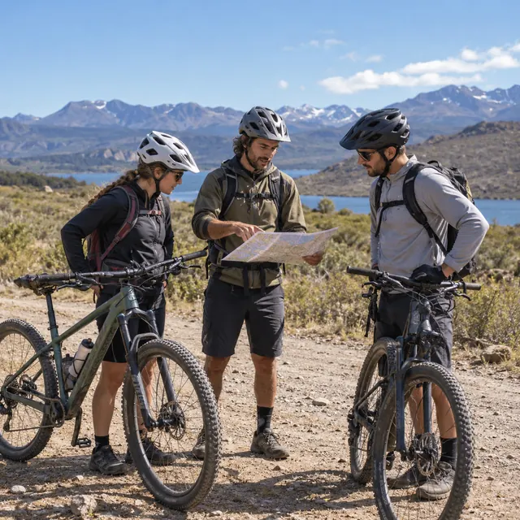
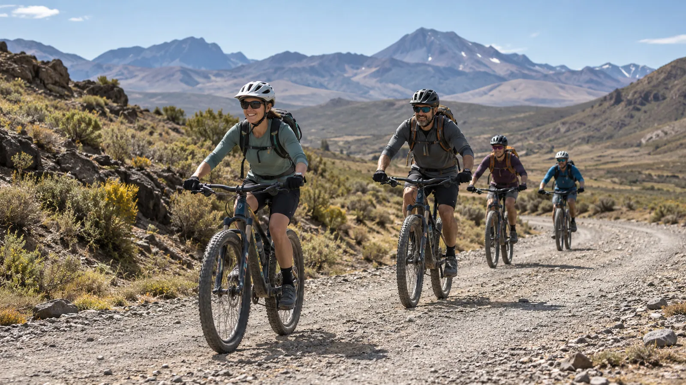
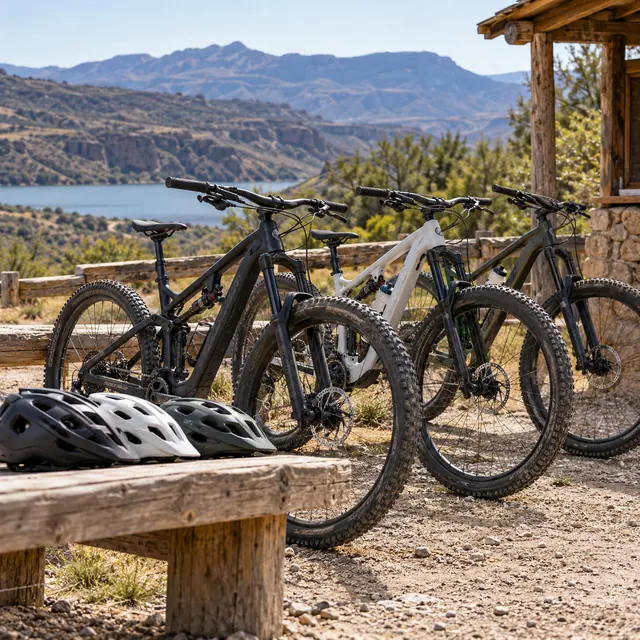
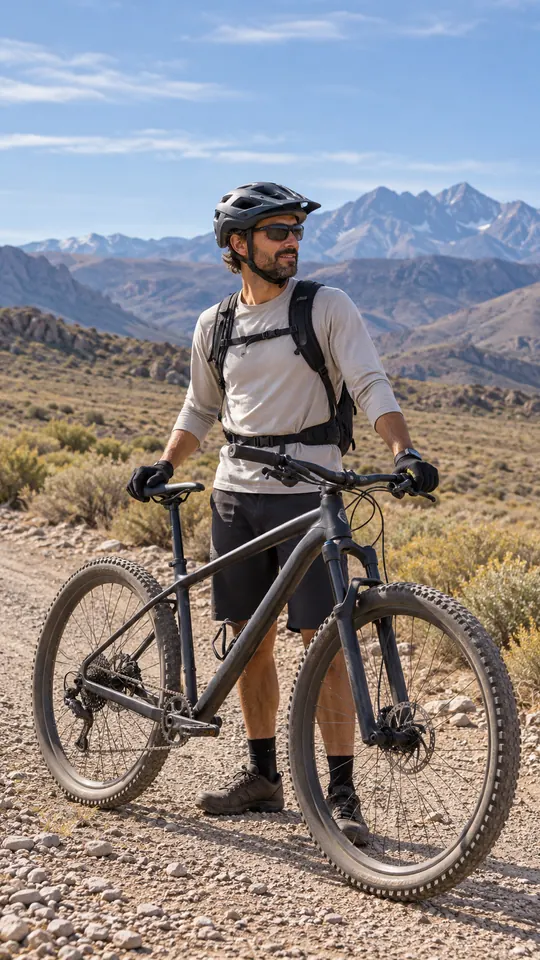
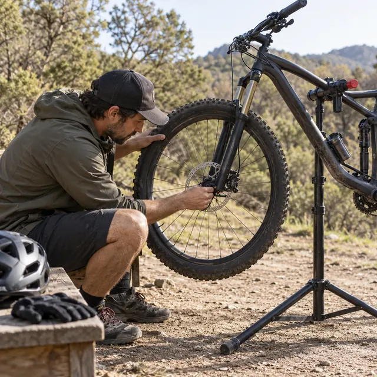
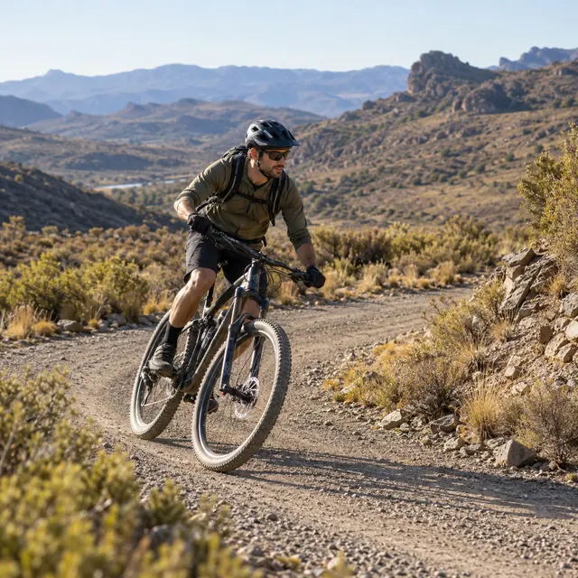
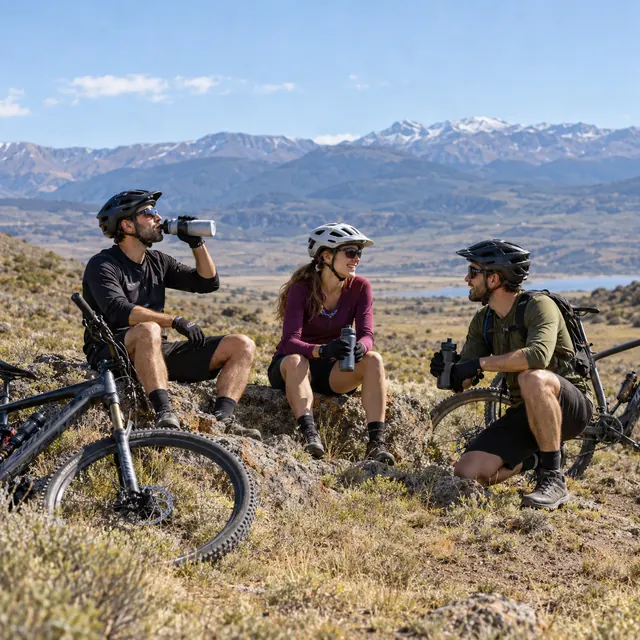
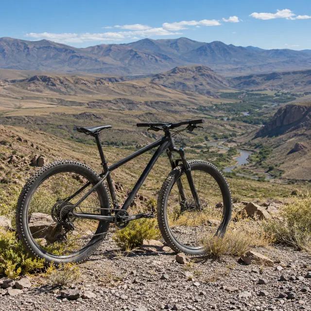
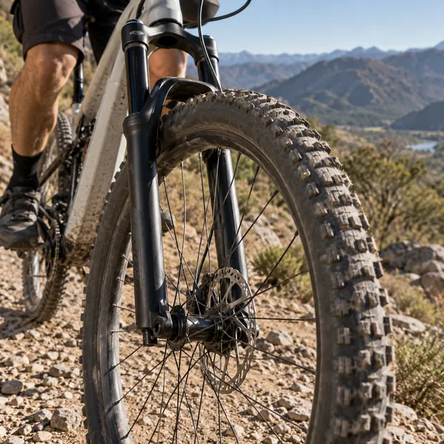
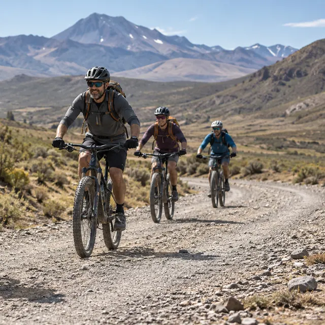

Guiadas MTB
Salidas con guía por ripio, huellas y sendas del norte neuquino, solo, en pareja o en grupo. El recorrido se elige según tu nivel y vamos a tu ritmo.
Quiero una guiadaEl norte de Neuquén, sobre dos ruedas
Guiadas para todos los niveles y alquiler de bicicletas de montaña. Elegís la salida, coordinamos por WhatsApp y salimos.


Salidas con guía por ripio, huellas y sendas del norte neuquino, solo, en pareja o en grupo. El recorrido se elige según tu nivel y vamos a tu ritmo.
Quiero una guiada
Bicis de montaña por medio día o día completo, para sumarte a una guiada o salir por tu cuenta. Te ayudamos a elegir el talle según tu altura.
Consultar alquiler
Con la señalética de dificultad del mountain bike: inicialintermedioavanzadoexperto
Nivel inicial
Ripio firme y huellas anchas, con poco desnivel.
Para tu primera salida en montaña o si venís en familia.
2 a 3 horas
ConsultarNivel intermedio
Subidas sostenidas y sendas con piedra suelta.
Si ya pedaleás seguido y querés conocer la zona.
4 a 5 horas
ConsultarNivel avanzado
Cuestas largas y bajadas técnicas, con parada para comer.
Si tenés buena base física y te sentís firme en las bajadas.
6 a 8 horas
ConsultarNivel experto
Sendas técnicas o el recorrido que tengas en mente.
Para riders con experiencia o grupos que buscan algo puntual.
A coordinar
ConsultarDuraciones orientativas: el recorrido final depende del grupo, el clima y la temporada.
De la primera charla a la vuelta, en cuatro tramos.
Nos contás tu nivel, cuántos son y qué día querés salir. Te pasamos las opciones y el punto de encuentro.
Escribir ahora
Antes de arrancar se ajustan frenos, cambios y altura del asiento, con bici propia o alquilada.

El guía marca la línea en las bajadas y espera en las subidas: nadie queda atrás.

Agua, algo para comer y fotos con la cordillera de fondo antes de la vuelta.
Paisajes y bicicletas ilustrativos



Contanos tu experiencia y tu tiempo: te sugerimos una salida y, si necesitás alquilar, el talle de la bici.
¿Cuántos son?
Con tu altura te sugerimos el talle del cuadro.
Contanos cuándo querés salir y te pasamos las opciones disponibles.